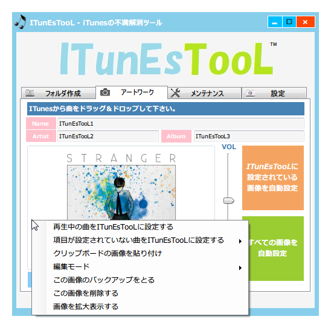
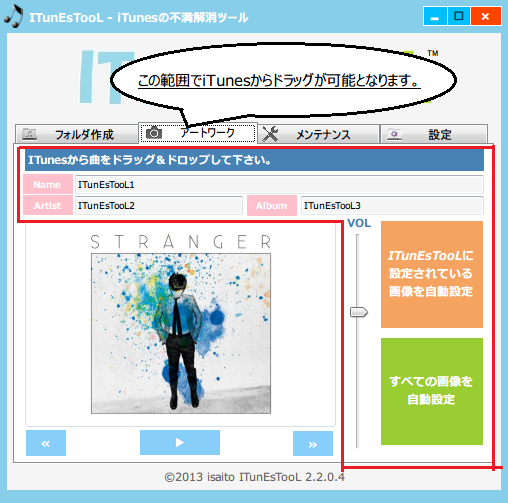
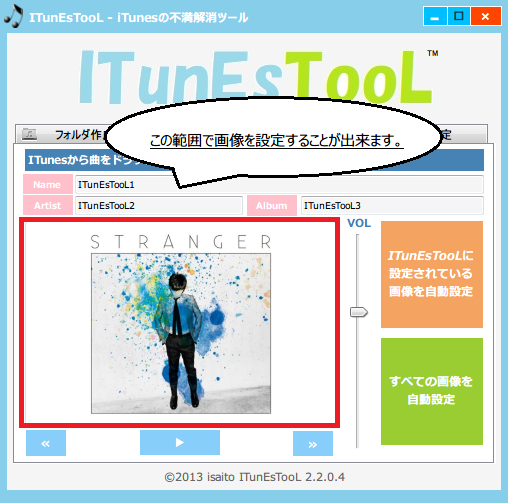
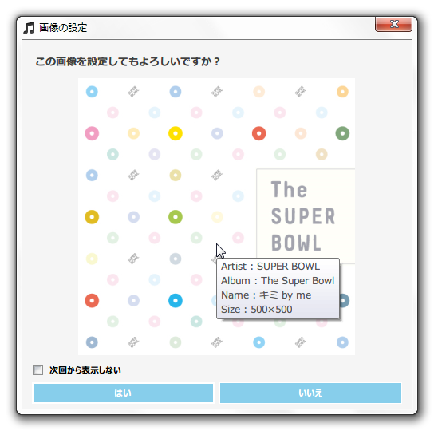

１．iTunesから曲をドラック＆ドロップ

２．クリップボードコピーボタン（Name,Artist,Album）
３．ボリューム、再生、曲戻し、曲送りボタン
４．再生中の曲をITunEsTooLに設定する
５．項目が設定されていない曲をITunEsTooLに設定する。
６．クリップボードの画像を貼り付け ※Ctrl + Cでも可
７．画像ファイルを設定する ※UAC有効にしているユーザのみ
８．画像ファイルを枠内にドラッグして設定する。 ※UAC無効にしているユーザのみ

９．編集モード
１０．この画像のバックアップをとる
１１．この画像を削除する
１２．画像を拡大表示する
１３．ITunEsTooLに設定されている画像を自動設定
１４．すべての画像を自動設定

※項目１３、１４について注意
１５．設定タブの画像関連